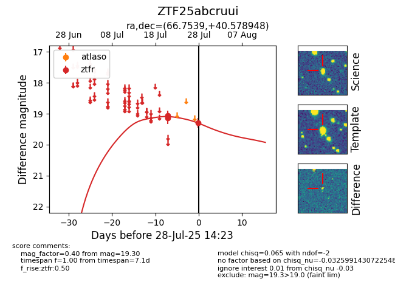

Target ZTF25abcruui at 2025-07-28 14:23, see:
FINK: fink-portal.org/ZTF25abcruui
Lasair: lasair-ztf.lsst.ac.uk/objects/ZTF25abcruui
ALeRCE: alerce.online/object/ZTF25abcruui
alt names
ZTF25abcruui (ztf,fink)
coordinates:
equatorial (ra, dec) = (66.7539,+40.57895)
galactic (l, b) = (161.0171,-5.83754)
photometry
last ztfr=19.30
3 ztfr detections
